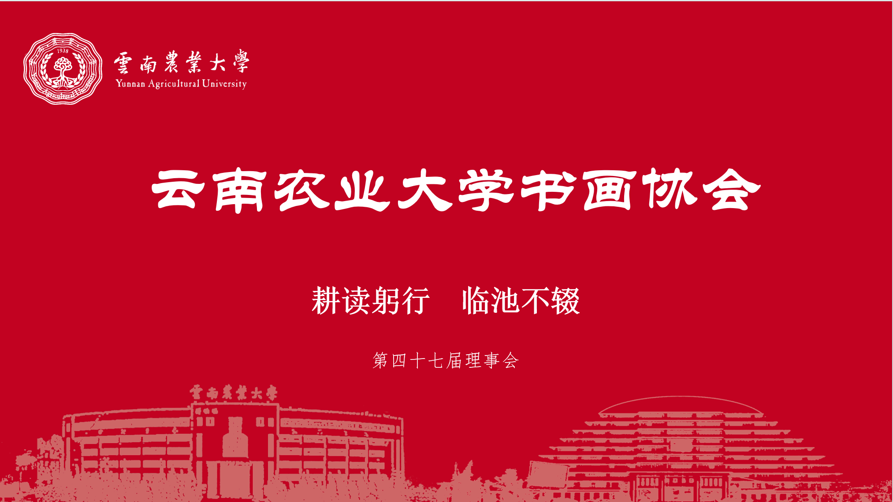
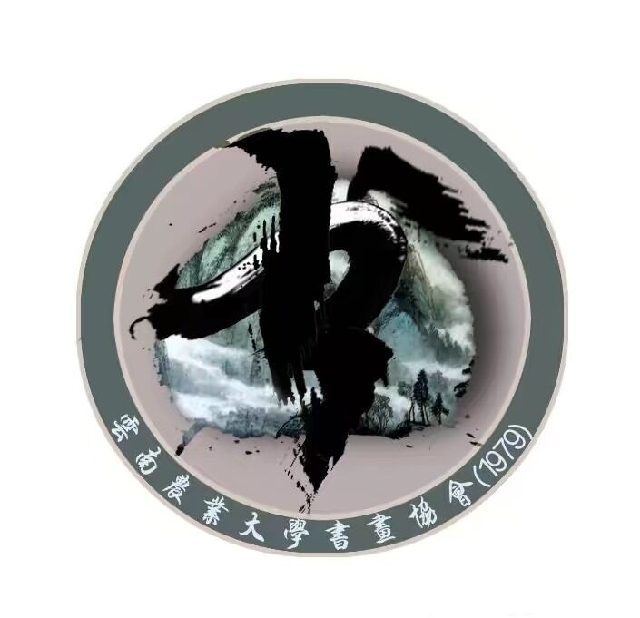
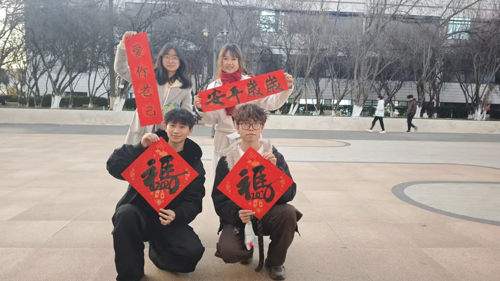
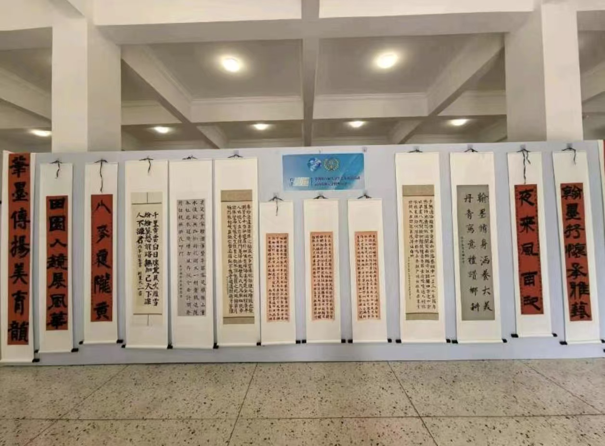
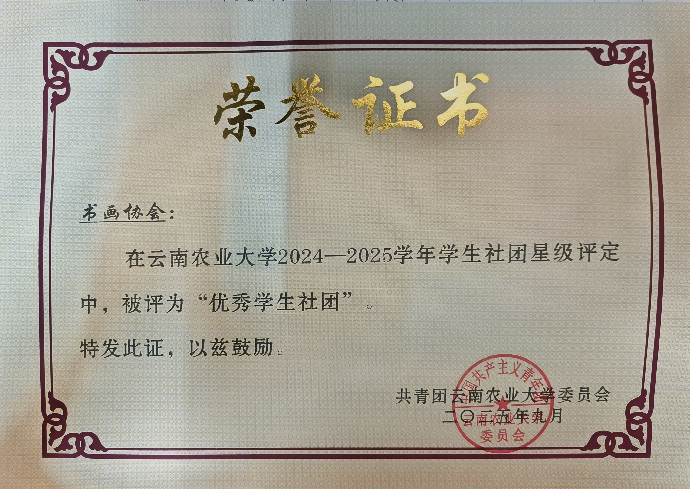
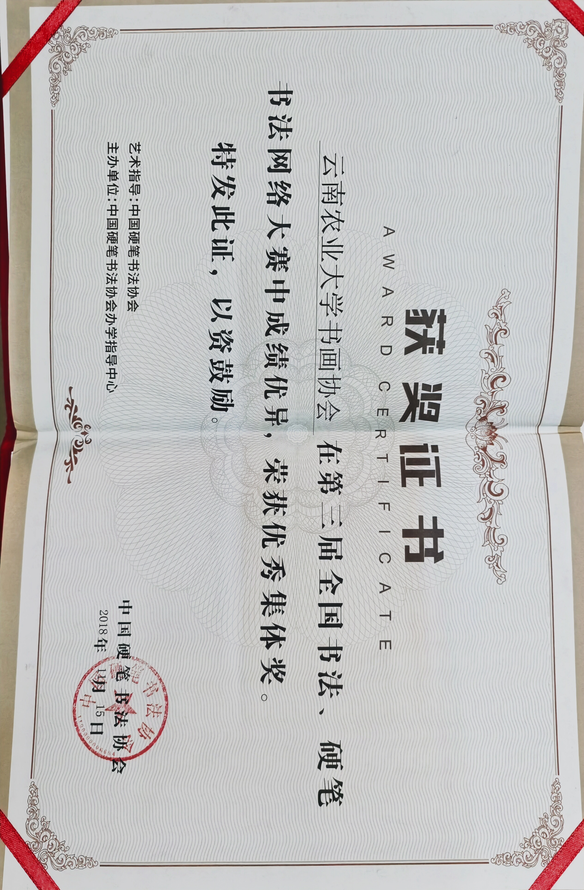

软笔部
BRUSH软笔部专注毛笔书法教学，讲授临帖与作品创作，开展习作交流和展览，弘扬笔墨文化，为爱好者提供平台。


YUNNAN AGRICULTURAL UNIVERSITY
一纸一墨，写尽半个世纪的赤诚。
云南农业大学书画协会成立于1979年，是云南农业大学历史最悠久的学生社团。协会由校内书画爱好者自发组织，在指导老师李文荣老师及一代代成员的共同耕耘下，持续把传统文化的笔墨技艺带进校园生活。
1991年，书法协会融入绘画，正式更名为书画协会。我们秉承“修书立人，持之以恒”的会训，以弘扬中华传统文化、丰富校园文化生活为宗旨；点在聚墨，主在切磋，重在交流，旨在提高。
FIVE STUDIOS
软笔部专注毛笔书法教学，讲授临帖与作品创作，开展习作交流和展览，弘扬笔墨文化，为爱好者提供平台。
硬笔部专注楷书、行书教学，开展练字活动与书法赛事，打磨书写功底，传承汉字之美，提升审美与文字素养。
绘画部涵盖素描、国画、卡通等绘画类型，组织写生与手绘创作，零基础可学，专注美术实践与原创作品创作。
篆刻部开展篆刻技艺教学，传授篆法、刀法与印章创作，组织拓印交流，传承金石文化，为爱好者提供展示平台。
宣传部负责宣传，运营新媒体账号，撰写推文、文案与新闻稿，设计海报展板，记录活动影像并展示书画作品。
INK IMPRESSIONS
每一次落笔，都是青春
留在纸上的回响。
RECENT EVENTS

01 / 2026.01.01
云南农业大学东校区
本次活动面向在校全体学生。书画协会成员现场书写春联福字，同学们积极观摩交流。大家以笔墨寄托新年祝愿，既丰富课余生活，传承传统书法文化，展现农大学子良好的精神风貌。

02 / 2026.07.02
云南农业大学校友会堂一楼
本次展览面向全校师生，展出协会成员的书法佳作。同学们驻足观赏交流学习，弘扬中华书法文化，以笔墨展现青年风采，营造浓厚校园文化氛围。

03 / 2026.05.16
云南农业大学西校区研讨中心 D 室
本次笔会面向书画协会成员，大家伏案临摹练习书法。成员之间相互探讨笔法，夯实书写功底，陶冶自身情操，浓厚社团学习氛围。
HONOR ROLL

